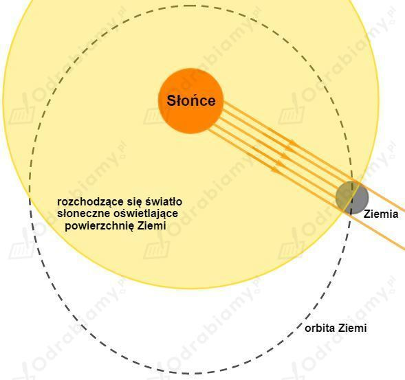
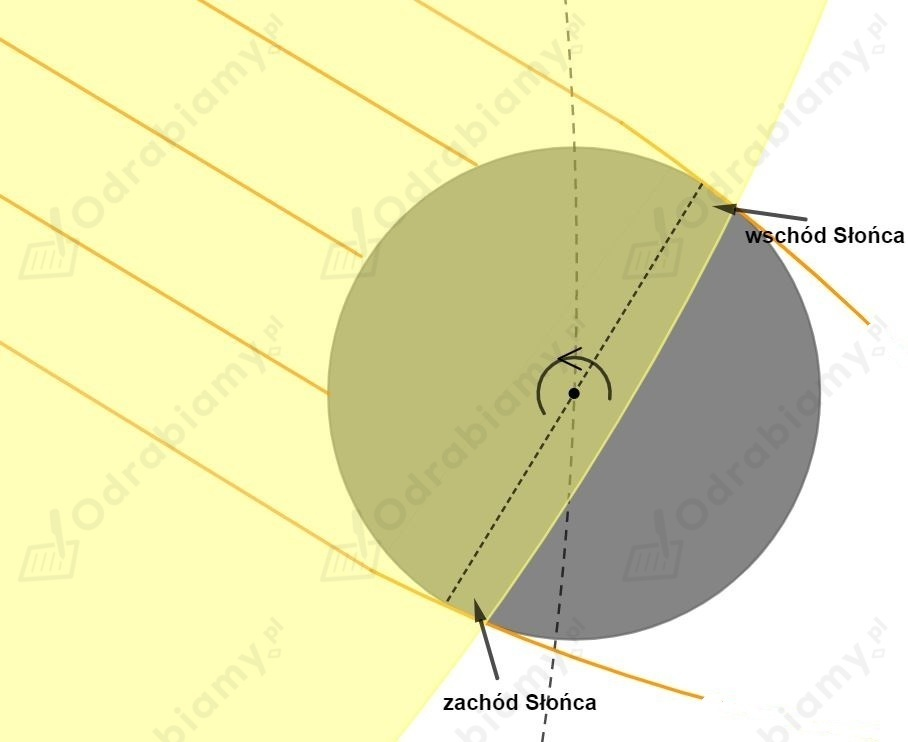

Przy całkowitym zachmurzeniu na danym obszarze światło słoneczne nie przechodzi przez chmury, ale do obszaru objętego zachmurzeniem dociera światło słoneczne wielokrotnie odbite od sąsiednich obszarów powierzchni Ziemi i od dolnej powierzchni chmur.
Takie wielokrotnie odbite światło słoneczne jest wyraźnie słabsze od światła słonecznego, stąd widoczne przyciemnienie otoczenia przy dużym zachmurzeniu.
a)
Poniższy rysunek przedstawia ruch Ziemi wokół Słońca (na rysunku nie zachowano skali odległości i rozmiarów):

Połowa powierzchni Ziemi skierowana w stronę Słońca jest oświetlona i na tej powierzchni panuje dzień. Ze względu na ruch obrotowy Ziemi, oświetlona część Ziemi ciągle ulega zmianie, tak że na Ziemi obserwujemy zmieniający się cykl dnia i nocy.
Zobaczmy przybliżony widok Ziemi:

Ziemia posiada gęstą atmosferę wokół siebie. Promienie zewnętrzne przechodzące przez atmosferę Ziemi, a nie padające na jej powierzchnię są załamywane w atmosferze i rozpraszane i będą oświetlać jej część na której powinna panować jeszcze noc. Stąd nad ranem przed wschodem Słońca robi się już jasno oraz po zachodzie Słońca światło słoneczne wciąż oświetla powierzchnię Ziemi.
b)
Na Księżycu taki efekt nie zachodzi, ponieważ Księżyc nie posiada własnej atmosfery.
Cień to obszar, na który nie docierają bezpośrednio promienie światła słonecznego, ponieważ są blokowane przez nieprzeźroczysty obiekt stojący na drodze tych promieni.
Na Ziemi w obszar cienia pada jednak światło rozproszone w atmosferze ziemskiej, które może dochodzić z każdej części nieba. Światło to jest dużo słabsze od bezpośredniego promieniowania słonecznego, dlatego nie rozświetla całkowicie cienia, a jedynie rozjaśnia go.
Księżyc nie posiada własnej atmosfery, więc cienie na powierzchni Księżyca nie będą dodatkowo rozświetlane tak jak na Ziemi, stąd są ostrzejsze i bardziej kontrastowe.
Prędkość z jaką mogą poruszać się samochody na autostradzie wynosi:
Prędkość z jaką mogą poruszać się samochody na bocznej drodze wynosi:
Kierowca utrzymuje dystans, którego przejechanie trwa . Wyznaczmy ile wynosi ten dystans w każdym przypadku.
Zatem odległość między samochodami maleje kiedy zjeżdżają one z autostrady na boczną drogę. Im wolniej poruszają się samochody tym mniejsza będzie między nimi odległość.
Zadanie jest analogią do przejścia fali z ośrodka w którym rozchodzi się szybciej do ośrodka w którym rozchodzi się wolniej (np. światło z powietrza do wody). Każdy z samochodów możemy potraktować jako powierzchnie falowe - odstęp czasowy pomiędzy samochodami to okres fali, a dystans pomiędzy samochodami to długość fali. Autostrada i boczna droga to dwa różne ośrodki, w których samochody - fala rozchodzą się z różnymi prędkościami. Przy przejściu między tymi ośrodkami okres (częstotliwość) fali się nie zmienia, a zmienia się prędkość i długość fali.
a)
Ołówek wstawiony pionowo do szklanki z wodą będzie wyglądał tak jak na rysunku B.
Ołówek jest wstawiony do wody pionowo, więc nie zaobserwujemy jego złamania, ale będziemy widzieć jego pogrubienie w części znajdującej się pod wodą. W tym przypadku woda zadziała jak lupa.
b)
Indywidualna część zadania.
Woda w akwarium jest stała i nie przepływa natomiast szyba samochodu jest pokryta spływającą, niejednorodną warstwą wody. Obserwując akwarium będziemy widzieć wyraźny obraz, ale zniekształcony w wyniku załamania światła w zależności od naszego kąta patrzenia na obiekty w akwarium. Obraz widoczny przez szybę samochodu jest bardzo zniekształcony przez załamanie światła i przepływającą wodę.
W filmie pokazane jest dlaczego kulki stają się niewidoczne po zanurzeniu w wodzie. Kulki te są wykonane z materiału, który silnie wchłania wodę i zwiększa przy tym znacząco swoją objętość. Zatem po napęcznieniu składają się one głównie z wody i nie widzimy ich z tego samego powodu, dla którego nie widzimy różnicy pomiędzy dwoma zmieszanymi objętościami wody. Światło przechodzi przez wodę i kulki w prawie identyczny sposób i nie widzimy prawie żadnego załamania światła przy przejściu przez kulki.
a)
Gdy promień A pada z powierza na szybę, rozdziela się na dwie części. Część B promienia odbija się od szyby, a część ulega załamaniu i jako promień D wnika do szkła. Gdy dotrze do drugiej strony szyby, znów się rozdziela. Jego część G załamuje się i wychodzi ze szkła do powietrza. Natomiast promień E odbija się od granicy ośrodków i wraca do pierwszej powierzchni szyby, gdzie rozdziela się na promień przechodzący (załamany) C i promień odbity F.
b)
Promień F po dotarciu do granicy szkła i powietrza przejdzie od powietrza załamując się oraz odbije od granicy szkła tak samo jak w przypadku promienia D.